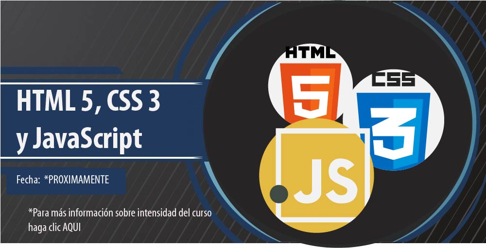

|  | ||
FrontendDefinición de FrontendEl frontend es la parte de una aplicación o sitio web con la que los usuarios interactúan directamente. Está compuesto por todo aquello que se ve y experimenta en el navegador, incluyendo el diseño visual, los menús, botones, formularios y la organización de los contenidos. El desarrollo frontend se refiere a la creación de esta interfaz, asegurando que sea atractiva, funcional y accesible. Fundamentos de FrontendLenguajes de Marcado y EstilosHTML (HyperText Markup Language)Es el lenguaje estándar para crear la estructura y el contenido de una página web. HTML organiza el contenido en elementos como encabezados, párrafos, listas, imágenes, tablas, enlaces, etc. CSS (Cascading Style Sheets)Es el lenguaje que controla la presentación visual del contenido. Define estilos como colores, fuentes, márgenes, posiciones, tamaños, y cómo los elementos se organizan en la pantalla. Lenguaje de ProgramaciónJavaScript (JS)Es un lenguaje de programación que permite hacer dinámicas las páginas web. Gracias a JavaScript, se pueden crear interacciones como menús desplegables, validación de formularios, animaciones, y actualizaciones de contenido sin necesidad de recargar la página. Frameworks y Librerías FrontendReactLibrería de JavaScript que facilita la creación de interfaces de usuario dinámicas y reactivas mediante el uso de componentes reutilizables. AngularUn framework desarrollado por Google que permite construir aplicaciones web robustas utilizando TypeScript. Vue.jsUn framework progresivo que es flexible y fácil de integrar, ideal para construir interfaces de usuario y aplicaciones SPA (Single Page Application). Diseño ResponsivoEl diseño responsivo (responsive design) es un enfoque que busca que las páginas web se adapten automáticamente a diferentes tamaños de pantalla, desde computadoras de escritorio hasta dispositivos móviles. Esto se logra principalmente con CSS (media queries) y frameworks como Bootstrap o Tailwind CSS. Control de VersionesGitHerramienta esencial en el desarrollo frontend (y en desarrollo en general) para gestionar cambios en el código. Git permite a los desarrolladores rastrear versiones del código, colaborar en equipos y gestionar múltiples versiones de un proyecto. Optimización y AccesibilidadOptimización de rendimientoConsiste en mejorar la velocidad de carga y la eficiencia de la página web. Técnicas como la minificación de archivos CSS y JavaScript, compresión de imágenes, y carga diferida (lazy loading) son esenciales para una buena experiencia de usuario. Accesibilidad (A11y)Se refiere a hacer la web accesible para todos, incluidos usuarios con discapacidades. Esto implica cumplir con estándares de accesibilidad como WCAG (Web Content Accessibility Guidelines), asegurando que el contenido sea perceptible, operable, comprensible y robusto. SEO (Search Engine Optimization)El frontend también juega un papel importante en SEO, ya que el código HTML debe estar bien estructurado para que los motores de búsqueda como Google puedan indexar correctamente el contenido. Esto incluye el uso adecuado de etiquetas de encabezado, descripciones meta, URLs limpias, y tiempos de carga rápidos. |
||